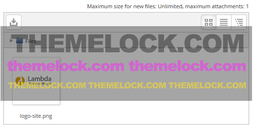
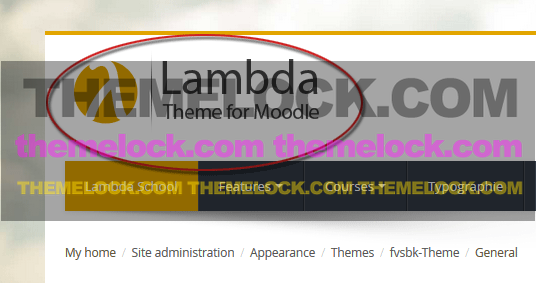
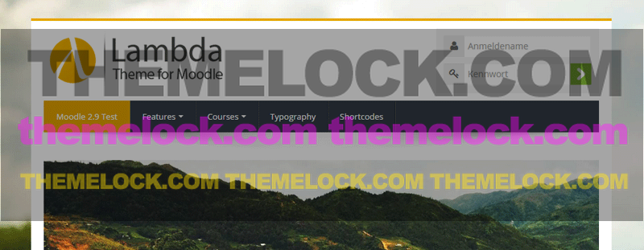
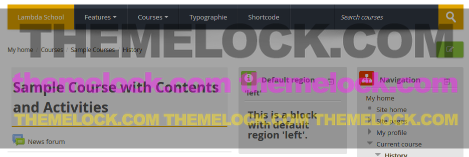
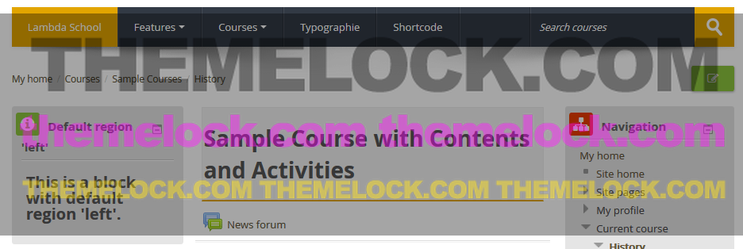
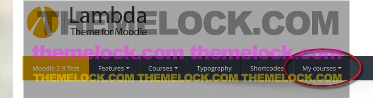
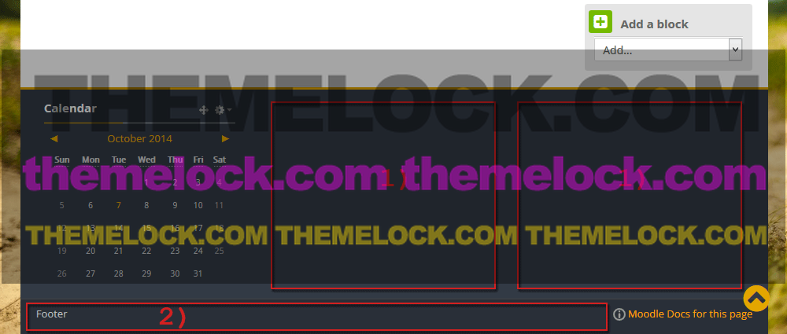

Theme Options
You should have completed the following steps:
- Installing the theme
- Choosing Theme Lambda as your default Moodle theme
- Adding the menu for the main navigation
Configurable Options
To access the configurable options for Theme Lambda go to Administration > Site Administration > Appearance > Themes > Theme-Lambda.
General Settings Page
Logo
You can upload your custom logo here. If you upload a logo it will appear in the header.
Theme Option:

Result:

Standard logo dimension
Sets the dimension of your logo to a maximum height of 100px. Using this setting, your logo will always correspond to the height of the login container and you can also use a @2x version for high-res screens.
Standard logo dimension - setting 'No'
Uploaded logo with a height of 200px.
Standard logo dimension - setting 'Yes'
Uploaded logo with a height of 200px - set to the standard height of 100px.

Set Page Width
Here you can choose from the list of page layouts. Available choices are:
- Boxed - fix width wide
- Boxed - fix width narrow
- Boxed - variable width
- Full page - fluid width
Use standard block layout
This theme is designed to put both block columns on the side. If you prefer the standard Moodle course layout you can check the box to use the standard three column layout:
Standard block Layout - setting 'No'

Standard block Layout - setting 'Yes'

MyCourses dropdown menu
Shows the enrolled courses for a user as a dropdown entry in the Custom Menu.

Footnote
Whatever you add to this textarea will be displayed in the footer throughout your Moodle site, e.g. Copyright and the name of your organisation.
- Here are the block regions of the footer where you can place any Moodle block.
- The text from the settings page will be placed here.

Custom CSS
Whatever CSS rules you add to this textarea will be reflected in every page, making for easier customization of this theme.